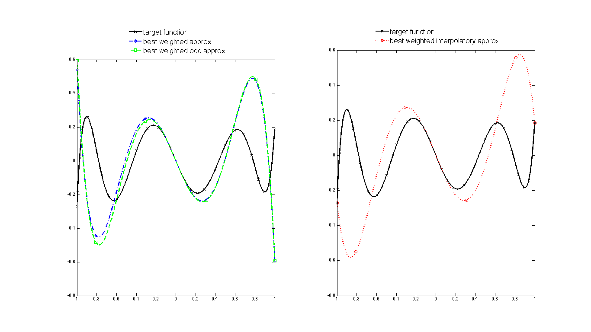
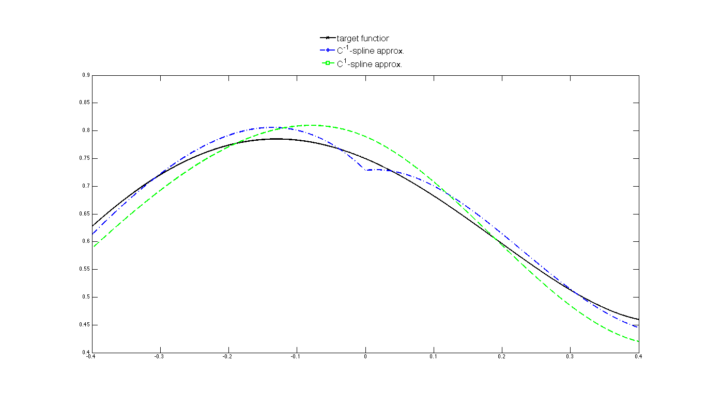
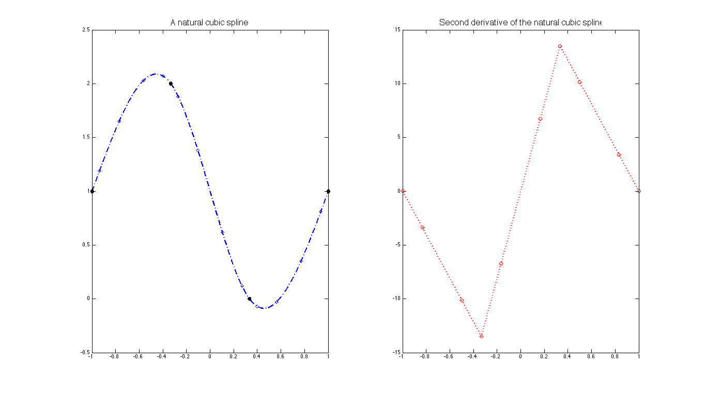

Contents
- One-sided polynomial approximation
- Weighted and interpolatory polynomial approximation
- Spline approximation
- Bernstein-type constants
- Natural cubic spline
- References
This document illustrates how to use the MATLAB package Basc (Best Approximation by Splines under Constraints, version 1.0) by calling the generic command with different options. All the theoretical justifications are to be found in [1]. The package relies heavily on CVX [2] and Chebfun [3], which are included in the downloadable folder. CVX and Chebfun need to be activated from the folder "/basc_v1.0" by typing basc_setup at MATLAB's prompt. Then, for later convenience, we define
Given a target function $F$ and a linear space $\mathcal{S}$ of approximants, the general problem considered here consists in minimizing $\|F-P\|$ over all $P \in \mathcal{S}$ for various norms on the interval $[-1,1]$ under various convex constraints. In all instances, the problem is translated to the level of Chebyshev coefficients using Chebfun [3], transformed into a semidefinite program, and solved using CVX [2]. Below are some usage examples of the main function.
One-sided polynomial approximation
Here we approximate the function $F(x) = \frac{T_5(x)}{4+\cos(x)+\sin(x)}$ by polynomials of degree $n \le 4$ in the max-norm and in the 2-norm, and we also incorporate the constraints that the approximant is smaller/larger than the target function, i.e., we consider approximation from below/above. The leftmost graph shows the target function and the unconstrained approximants. The middle graph displays the differences between the target function and the max-norm approximants: one recognizes the equioscillation property for the unconstrained approximation and one also observes that the one-sided approximants are just shifted versions of the unconstrained approximant (a fact that is easy to establish). The rightmost graph reveals that such a phenomenon does not occur for the 2-norm.
FS,fs,LOC,loc,BX,bx); subplot(1,3,2); plot(F-P,'s--g',F-Pa,'x-y',F-Pb,'d-.b',LW,lw); set(legend('max-norm approx. error','from above','from below'),FS,fs,LOC,loc,BX,bx); subplot(1,3,3); plot(F-P2,'o:m',F-Pa2,'x-c',F-Pb2,'d-.r',LW,lw); set(legend('2-norm approx. error','from above','from below'),FS,fs,LOC,loc,BX,bx);

Weighted and interpolatory polynomial approximation
With a different target function and approximant degree, the experiment below shows how to compute the best unconstrained approximant and the best odd approximant relative to a weighted max-norm. It also shows how to compute the best approximant under interpolatory conditions at the endpoints, still relative to the weighted max-norm. Note that the weight $W(x) = x^2$ vanishes two-fold at $x=0$, which forces the approximant to agree two-fold with the target function at $x=0$. This is indeed verified by the examples considered here.
FS,fs,LOC,loc,BX,bx); subplot(1,2,2); plot(F,'x-k',Pwi,'o:r',LW,lw); set(legend('target function', 'best weighted interpolatory approx.'),FS,fs,LOC,loc,BX,bx);

Spline approximation
We now consider the approximation in the max-norm by splines, i.e., piecewise polynomials satisfying some smoothness conditions at the breakpoints. In the first example below, a polynomial of degree $2n$ is approximated by splines of degree $2n-1$ with one breakpoint at $x=0$. No smoothness condition is imposed at this breakpoint, in other words, the spline is a priori $C^{-1}$ there, but one notices that it is in fact automatically $C^0$ (a fact that can be verified theoretically). For comparison, the best $C^1$ spline approximant is also displayed.
FS,fs,LOC,loc,BX,bx);

In the next example of spline approximation, the target function is a spline itself: it is taken to be the prototypical absolute value function. We compute its best max-norm approximants by splines with breakpoints at $x=-1/2$ and $x=1/2$ and whose three polynomial pieces have degree $1$, $2$, and $1$, respectively. One approximant has smoothness $C^0$ at both breakpoints -- this example incidentally reveals that best approximants are not always unique, as perturbing the slopes of the outside pieces does not affect the overall error. Another approximant has maximal (meaning $C^1$ here) smoothness at both breakpoints. The last approximant obeys an extra constraint besides maximal smoothness, namely its derivative is lower bounded by the function $L(x)=-1/2$.
FS,fs,LOC,loc,BX,bx);

Bernstein-type constants
Here we look at the rate $E_n(|\cdot|)$ of approximation error to the absolute value function in the max-norm by polynomials of degree $\le n$. It is a classical fact that $$ \beta := \lim_{n \to \infty} n E_n(|\cdot|) $$ exists. This result is due to Bernstein, who conjectured the value $\frac{1}{2 \sqrt{\pi}}$ for $\beta$. This was disproved by Varga and Carpenter who obtained the value $$ \beta \approx 0.280169499023. $$ Furthermore, it is known that $$ \beta^{\rm conv} := \lim_{n \to \infty} n E_n^{\rm conv}(|\cdot|) $$ exists, too. Below, we verify the behavior of $E_n(|\cdot|)$ and investigate that of $E_n^{\rm conv}(|\cdot|)$. Before doing so, let us see what the best approximant, the best convex approximant, and the best [convex-on-concave-outside-$[-2/3,2/3]$] approximant to $|\cdot|$ look like when $n=5$.
'best partially convex approx.'),FS,fs,LOC,loc,BX,bx);

We continue with the calculation of $E_n(|\cdot|)$ and of $E_n^{\rm conv}(|\cdot|)$ for values of even $n$ up to $n = 26$ and $n = 18$, respectively, and we report their behaviors in the graph below. Note that we used a customized code for the convex approximation in order to increase the range of computable $n$.

Natural cubic spline
Given nodes $-1 = t_0 < t_1 < \cdots < t_{M-1} < t_M = 1$ and data $y_0,y_1,\ldots,y_{M-1},y_M$, the natural cubic spline is the $C^2$ function that minimizes $\|P''\|_2$ subject to the interpolatoty conditions $P(t_i) = y_i$ for all $i$. This function has breakpoints at $t_1,\ldots,t_{M-1}$, its pieces all have degree $\le 3$, and it satisfies $P''(t_0)=0$ and $P''(t_M)=0$. We minimize not over all $C^2$ functions, but over all $C^2$ splines of degree $5$ with breakpoints $t_1,\ldots,t_{M-1}$ and we verify below that the second derivative of the minimizer is indeed a continuous linear function vanishing at the endpoints.

References
1. S. Foucart and V. Powers, "Basc: constrained approximation by semidefinite
programming", In preparation.
2. CVX Research, Inc., "CVX: MATLAB software for disciplined
convex programming, version 2.1", 2014, http://cvxr.com/cvx.
3. L. N. Trefethen et al., "Chebfun Version 5, The Chebfun Development Team", 2014, http://www.chebfun.org.